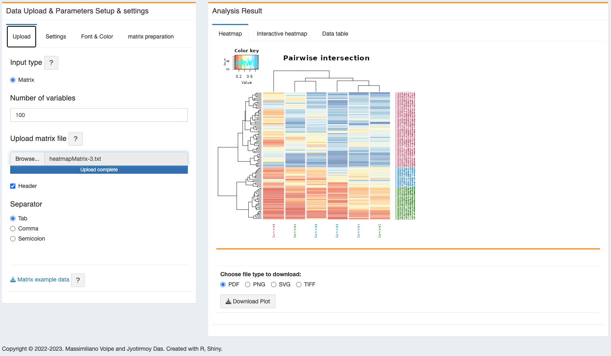
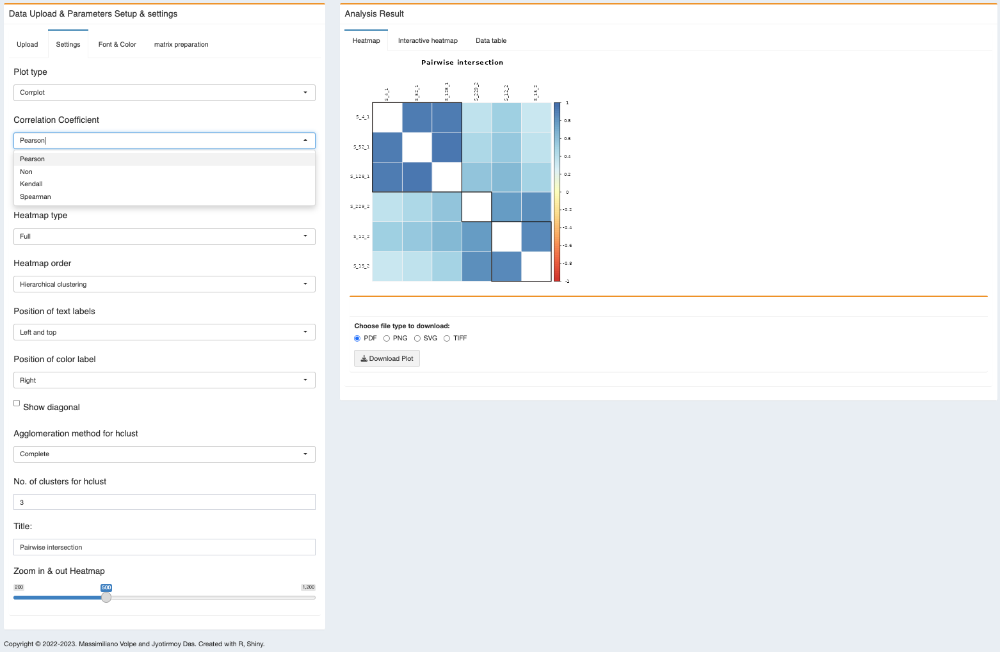
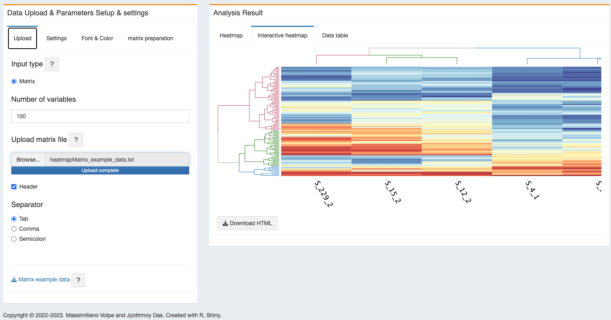
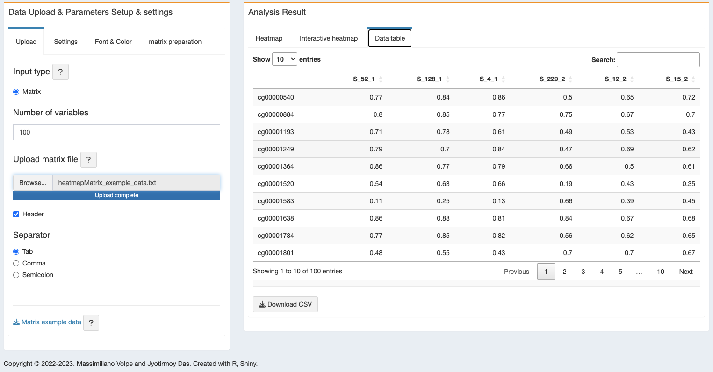

4 Pairwise analysis (Heatmap)
A heatmap module (Pairwise Plot) is added in methylR to show the \(\beta\) value distribution of the differentially methylated CpGs. A pairwise correlation analysis can also be performed in the module.
4.1 How to use
4.1.1 Upload
User can upload the input data matrix in Tab (.txt) or Comma (.csv) or Semicolon (.csv but with ;) separated format. If you don’t have the matrix, this modules provides the functionality to make it starting from the main results coming from methylysis (see Chapter 1). Either ChAMP and minfi will provide the input data or you can get test data by clicking on “Matrix example data” and “List example data” buttons. For a better view of the result, we added the functionality to change the number of variables on the heatmap.
4.1.2 Settings
- Plot type - User can choose the heatmap or correlation plot function for the analysis.
- Correlation Coefficient - four different types of correlation coefficient added in the module, 1) Pearson, 2) Spearman, 3) Kendall and 4) no-correlation (better for heatmap). Default chosen ‘non’ (no-correlation).
PLEASE NOTE: IF YOU WANT TO PERFORM THE CORRELATION PLOT, THEN PLEASE SELECT PEARSON, SPEARMAN OR KENDALL.
- Agglomeration method for hclust - different agglomeration method for hierarchical cluster analysis provided in the module, 1) ward.D, 2) ward.D2, 3) single, 4) Complete, 5) Average, 6) Mcquitty, 7) Median, and 8) Centroid. Default chosen ‘Complete’.
- No. of clusters for hclust - user can set the number of hierarchical cluster for their data. Default is 3.
- Distance Matrix computation - different types of distance matrix calculation can be applied to generate the heatmap, 1) Euclidean, 2) Manhattan, 3) Canberra, 4) Minkowski or 5) none. Default is ‘Euclidean’.
- Dendrogram - user can choose to show the dendrogram on the row and/or column list.
- Color key - selecting color key will give option to change the size of the color key. However, user can choose not to show the color-key. Also color key title is user-defined.
- axis label - both x and y-axis label is user-defined. User can change the label of the x and y axis.
- Title - It will change the title of the heatmap/ correlation plot.
- Zoom in & out Heatmap - for the static plot, user can set the zoom in/out option.
4.1.3 Font & Color
- Select theme - with the pre-defined theme colors, custom-defined color for the heatmap is also enabled.
- label - user can separately define the size, rotation and color of the label text.
- Color - rectangle border, grid color and label color is also user-defined.
4.1.4 Matrix preparation
We added a tab for the user to build the heatmap matrix by starting from the results of the main analysis, regardless the user choice to perform it with ChAMP or minfi. The matrix can be uploaded directly on the Upload tab to run the heatmap analysis.
1. Upload normalized data table - user can upload the normalized table from the main analysis directly without any modification.
2. Upload DMC data table - user can upload the differentially methylated CpG data table from the main analysis directly without any modification.
3. Select adjusted P-value - for more filtration on the dataset, we set a adjusted p-value (BH-corrected as defined in the main analysis section, both ChAMP or minfi) parameter. Default is 0.05.
4. Select logFC value - for more filtration on the dataset, we set a logFC (as defined in the main analysis section, both ChAMP or minfi) parameter. Default is 0.1.
4.2 Analysis result
- Heatmap - the figure will be shown in the adjacent panel. It can be downloaded in the following formats, PDF, PNG, SVG and TIFF.

Correlation plot - for correlation plot, please adjust the ‘Settings’, ‘Plot type’ to Corrplot and ‘Correlation Coefficient’ to Pearson/Spearman/Kendall.

- Interactive heatmap - an interactive heatmap will also be generated and can be downloaded as HTML file.

- Data table - a data table will be generated from the heatmap figure data.

4.3 R packages used
TO ALL OUR USERS, IF YOU ARE EXPERIENCING ANY TROUBLE WITH THE APP, BEFORE SENDING THE BUG REPORT, PLEASE RESTART THE DOCKER CONTAINER AND TRY AGAIN.↩︎
Copyright © 2022-2023. Massimiliano Volpe and Jyotirmoy Das.